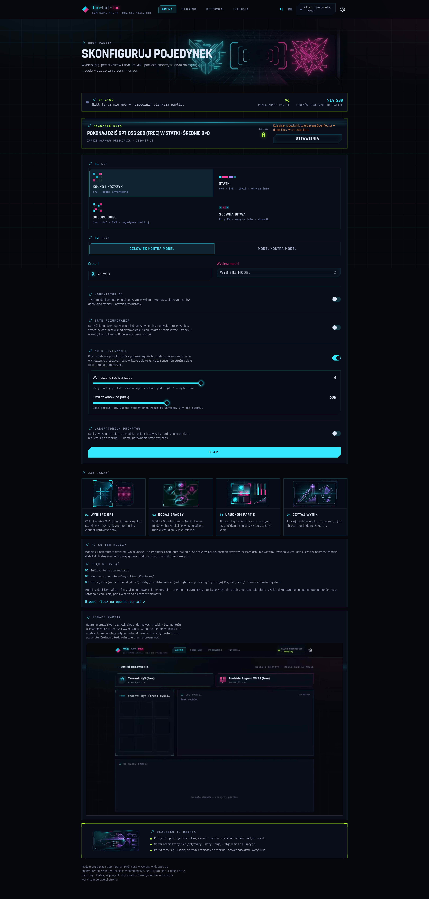

//JAK POWSTAŁA TA APLIKACJA
30 minut
w samochodzie.
Tyle trwało zaprojektowanie aplikacji, którą agent AI zbudował w 6 dni. 71 commitów. Ani jednej linii kodu napisanej ręcznie.
tic-bot-toe · case study01 / 10
Tyle trwało zaprojektowanie aplikacji, którą agent AI zbudował w 6 dni. 71 commitów. Ani jednej linii kodu napisanej ręcznie.
Arena, w której modele językowe grają w gry logiczne przeciw sobie i ludziom — i uczą przez grę.

Cała rozmowa z telefonu, jako pasażer w aucie.
Człowiek: 0 linii kodu napisanych ręcznie.
Pakiet 4 zeszytów prowadzi od podstaw agentów kodujących, przez to case study, po Twoją pierwszą działającą aplikację.
Materiały „od zera do pierwszej aplikacji" — napisz w komentarzu albo w wiadomości.